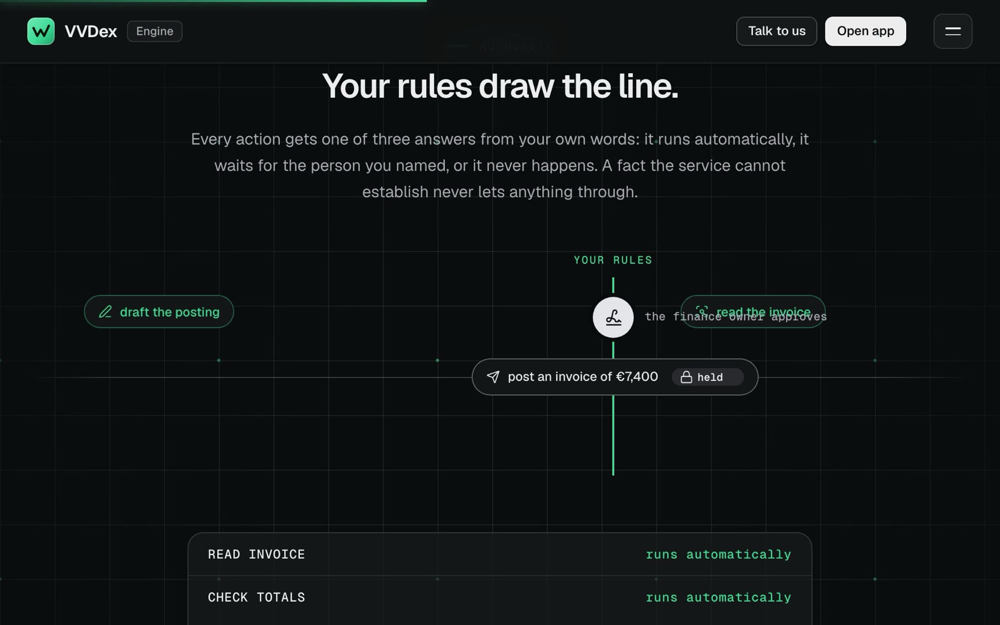

VVDex Engine turns a plain-language description of a business task, such as handling supplier invoices, into a working service. For every action it decides, in code and from the business owner's own words, whether the action runs by itself, waits for a named person or never happens. A crew of AI agents does the steps, a reviewer from a different model family checks each result, and every run is sealed under one SHA-256 digest that a public checker recomputes from the receipts alone.
The problem
Businesses want to hand routine work to AI, but most automation tools make them design the workflow themselves, and few can show afterwards what ran and why. Trust is the harder problem: a system that reads incoming email can be given orders by that email, and a model that decides can be talked into the wrong decision. The Engine starts from the other end: the owner describes the outcome, and the limits are fixed in code before anything runs.
- Hostile input. Incoming emails, forms and web pages can contain instructions aimed at the model, so they are treated as data and never as commands.
- No consequential action on a model's word. The owner's rules, run by code, decide whether something runs by itself, waits for a named person or never happens, and a fact the service cannot establish lets nothing through.
- Checkable afterwards. Someone who was not there has to be able to see what ran, what was decided and why.
- Early access, one person, one server. Demos reach no outside system, model use is capped per event (12 agent runs, 12 reviews, 240 seconds), and a business's own systems are connected by hand with the owner.
How it works
Describe
The owner writes the work in plain words: what arrives, what should happen and what needs a person's approval.
Compile
A model reads the paragraph into a typed process, code checks every rule against the owner's own sentences and asks where they are silent, and generated test cases run on the compiled result (20 to 60 seconds).
Set the limits
Each action gets one of three answers (runs by itself, waits for a named person, or never happens), and the service runs in shadow on real events, deciding and recording but releasing nothing, before it can go live.
Run
Secrets are stripped from what arrives, facts are read with quotes, records are looked up, numbers are computed by code and the rules decide, while specialist agents do the steps and an independent reviewer checks every result.
Approve and release
What the rules leave to a person waits for the named approver, who sees each output with its sources and can edit or drop a write, and approval issues a signed single-use grant so each native write runs once and its outcome is checked with the vendor.
Seal
Every fact, decision, review and approval is sealed under one SHA-256 digest, so changing one receipt breaks the seal.
What I built
The compiler
A model reads the paragraph into typed facts, rules and actions, and every rule must quote the owner's words. Code checks each rule against those sentences, asks when the words are silent, and compiles the result into a contract and an authority graph.
Authority and release
Each action runs by itself, waits for a named person, or never happens, and a 'never' rule is checked on the action's real arguments. Approving issues a signed single-use grant for exactly the approved writes; each native write runs once and its outcome is checked with the vendor.
A crew with an independent reviewer
Code routes each step to a specialist agent role, and a reviewer from a different model family checks every result, with one revision allowed. Before a write that moves money, grants access, operates equipment or deletes data, three reviewers vote and two must pass.
Sealed evidence
Each fact, decision, review and approval is a receipt, and all receipts are sealed under one SHA-256 digest. The public proof page shows a real sealed run, re-checks its seal and lets you change one receipt to watch the check fail.
Catalogue and console
50 service examples, compiled from briefs derived from the earlier Agent Service Lab, come with their rules, scenario tests and demo runs you can try without an account. The console adds triggers (email, signed webhook, schedule, public form), approvals, roles, a hash-chained audit log and an MCP server with no approve tool.
Proof, with dates
Compile reliability on 76 recorded plain-language briefs, each read by the live model and kept as a recording.
All 76 produced a valid reading: 64 on the first attempt, 7 on the second, 3 on the third, 1 on the fifth and 1 on the sixth. Retries are recorded, not hidden. A valid reading is not a complete service: the catalogue figures show how many still have open decisions.
Audit of the compiler after a brief of mine showed '16 of 16 requirements mapped' and passing tests, yet the lead-scoring numbers were missing from the contract.
Cause: every check took its expectation from the reading it was checking. The fix was an independent meaning review by a model from another family. When it went live, services marked complete fell from 38 to 5, because most had been losing meaning.
Real-model runs of the reviewers on agent work.
A reviewer caught an invented price and start date in a draft, and the revision removed them. A reviewer from the second model family flagged a day count of 25 instead of 20 in a refund check written by the first family's model, which review inside the first family had missed; the revision fixed it and all three reviewers then passed it.
Prompt injection: a real model given instructions hidden in the incoming text.
The model refused them, and the deterministic checks named the field that carried them. The same kind of check runs before every decision; the public sample run records 'no injection signals'.
A ticket-triage step measured on 68 public insurance-support tickets, with examples taken only from the training split.
Category names alone: 70.6% right (48 of 68). With the owner's one-line definitions: 77.9%. With definitions and 20 labelled past tickets: 80.9% (55 of 68). A generic ticket-triage playbook lowered accuracy by 3 to 4 points, so the Engine makes no claim that it helps. 3 of the remaining errors contradict the dataset's own definitions. 68 tickets is a small sample.
The public sealed run, re-checked today with the public checker.
The run's 15 receipts recompute to the stated SHA-256 digest. A copy with one word changed in one receipt fails the check. Source ↗
In numbers
- compiled service examples, in 11 categories of business work29 Oct 2026
- 50
- automated tests passing in the last deployed release (4 skipped)5 Oct 2026
- 1,429
- recorded briefs read into a valid process, 64 on the first attempt25 Sep 2026
- 76 / 76
- catalogue scenario tests passing; none confirmed failing, 54 disputed or incomplete29 Oct 2026
- 255 / 309
Decisions
Code decides what is released. Models read, draft and check.
A model that reads email can be steered by it. So the owner's rules are compiled into conditions that code evaluates: a stricter rule wins, an unknown fact never releases anything, and a 'never' rule on an action's real arguments cannot be overridden by an approval. Models read text, draft, and must quote what they rely on.
Trade-off: More things stop for a person. A fact only a model can judge may stay undecided, and the compiler asks or refuses instead of guessing, so 42 of the 50 examples still list open decisions.
Compile the contract and test it, instead of trusting one reading.
The first compiler used keyword rules and no model. On one real access-control prompt it took 6 ms and understood none of the requirements (0 of 7). The current one has a model read the whole description, code validate it against the owner's sentences, and generated test cases run on the compiled result. An incomplete service cannot go live, and there is no silent fallback.
Trade-off: Compiling costs model calls and time: 6 calls and 22 seconds on that prompt, 20 to 60 seconds in general. With no model, the compile returns an error rather than a degraded guess.
A different model family checks the work, and an independent meaning check checks the compiler itself.
A refund check written by one model counted 25 days instead of 20; review inside the same model family had not caught it, and a second family did. Later, a brief I wrote to test the compiler showed '16 of 16 requirements mapped' and passing tests while the scoring numbers were missing from the contract, because every check took its expectation from the reading it was checking. I ordered an audit of the whole engine and added a meaning review that counts a loss only when it quotes the owner's lost words.
Trade-off: Every result costs a second model call and some time. The new check made the catalogue look worse first: services marked complete fell from 38 to 5. Reviewers can also be wrong: one rejected a correct research result because it saw only part of the sources. That was fixed the same day.
A write happens once, or it stops.
Retries are how automations pay twice or send twice. Each approved write carries a signed single-use grant bound to the exact payload, native writes are checked with the vendor before any retry, and an unclear outcome stops for a person to reconcile.
Trade-off: Some failures wait for a person instead of fixing themselves. Writes through the connector bridge cannot be read back the same way, so they are at-most-once: only failures that provably never sent are retried, and a request that was already sent cannot be recalled.
Look inside



Limits, honestly
- Early access. Demos reach no outside system: each write runs once in a sandbox back office. Running a service on a business's own accounts is set up by hand with the owner, not self-serve, and the Engine's code is private.
- The 50 examples are compiled, not 50 connected automations. Eight are complete; 42 still list decisions their owner would have to answer before they could go live.
- Scenario tests are written from each brief, so they cannot catch a requirement the compile missed, and the measured samples are small. A fact a model has to judge can stay undecided, and then the action waits for a person.